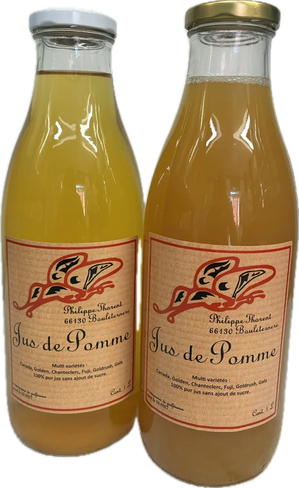
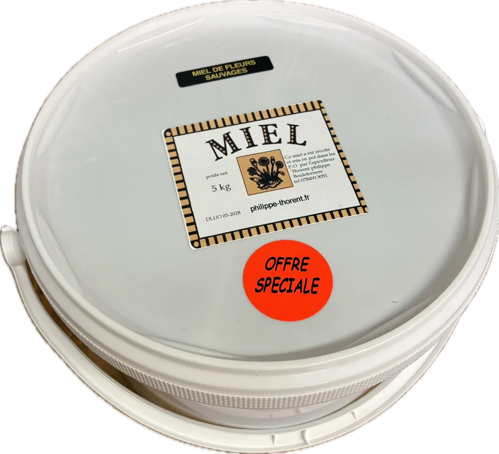
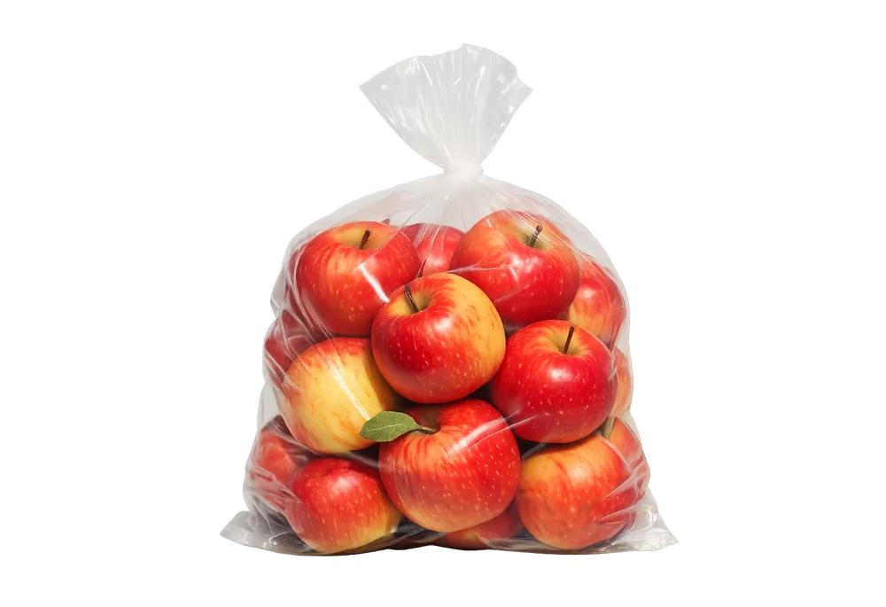
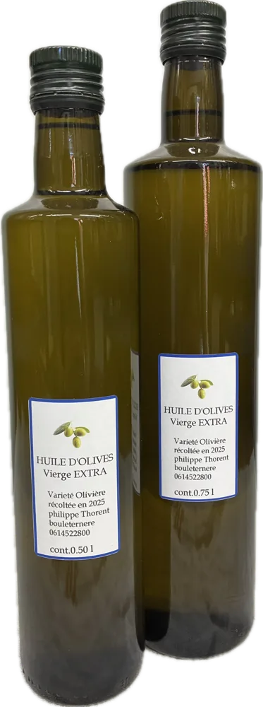
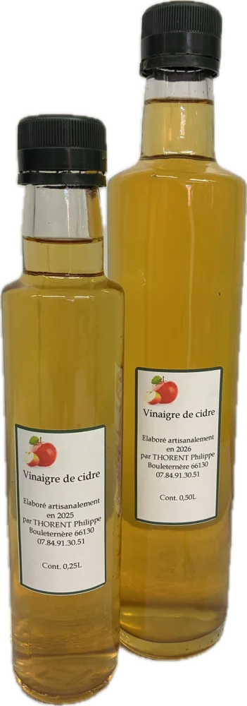
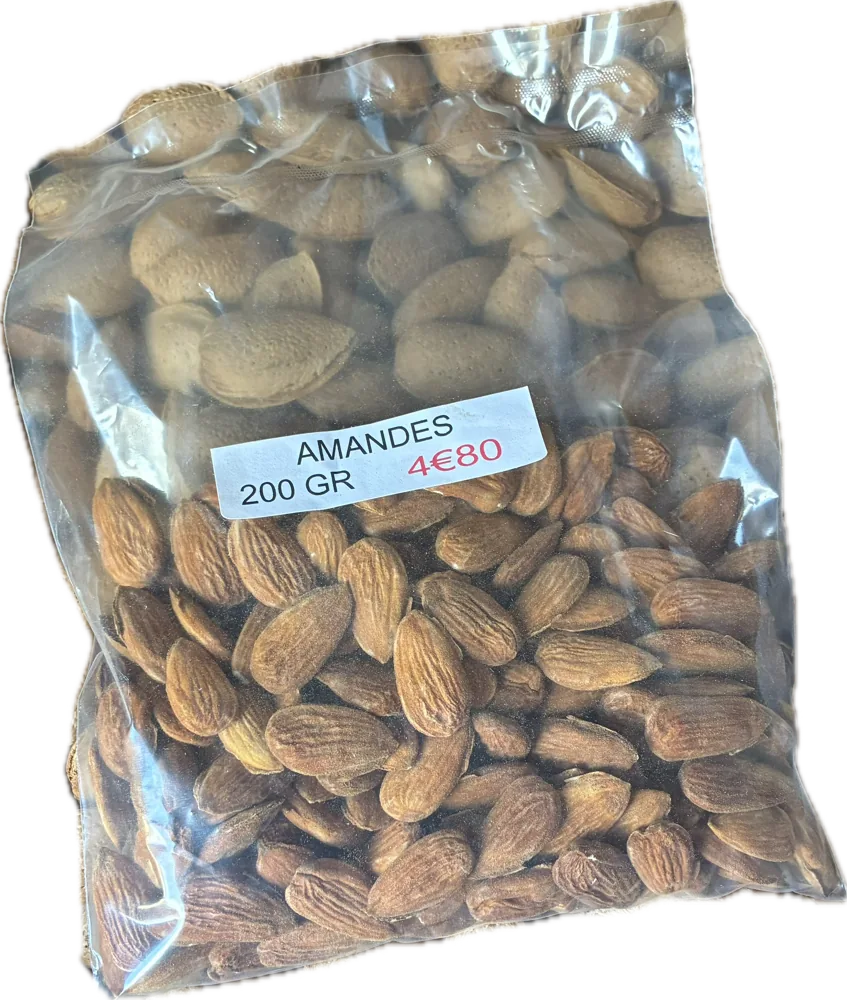
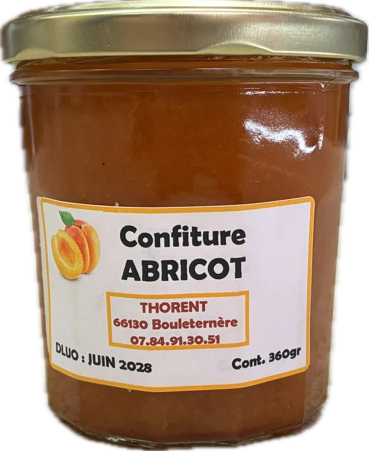
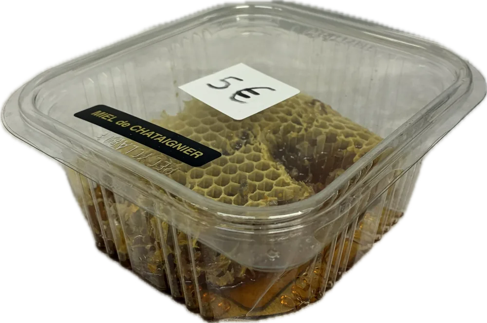
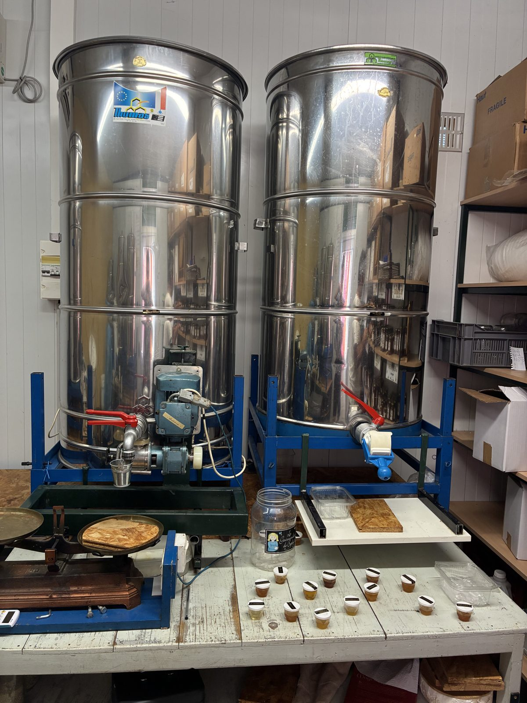

Jus de pomme
Des pommes du verger, pressées en pur jus sans sucre ajouté. Au choix, clair ou foncé — c'est la variété qui change, pas le prix.
1 L — 3 €Carton 6 bout. — 18 €
Chaque miel vient d'un coin précis du Roussillon et d'un moment de l'année. Survolez la carte pour voir où butinent les abeilles — et repérez la miellerie, notre point de vente.

Le plein de miel pour la famille, à prix doux — en quantité limitée, à la miellerie.
1 kg — 10 €5 kg — 45 €Chaque miel vient d'un coin précis du Roussillon. Cliquez sur un point pour ouvrir le ou les miels qui y sont récoltés.
Butiné de mi-février à début mai, dans les garrigues où les seules végétations sont le romarin et le thym. Contrairement à la plante, à l'odeur très prononcée, le miel est d'une extraordinaire finesse et d'une saveur incomparable.
La lavande stœchas, dite « lavande papillon » à cause des petites ailes en haut de sa corolle, pousse essentiellement dans les Pyrénées-Orientales. Cette plante fleurit de mars à juin et dégage une odeur de thym. Le miel en tire une saveur délicate et suave. Un miel recherché.
Butiné sur les garrigues sèches et arides de Boule d'Amont, principalement sur la bruyère blanche, le ciste cotonneux et le chêne vert. Un goût rustique, sauvage, un peu caramel ou pain d'épices. Il cristallise naturellement en une structure crémeuse.
Butiné sur l'orpin, la bruyère cendrée, le ciste argenté et le chêne vert, en juin-juillet dans le maquis catalan. La couleur foncée donnée par le chêne et le ciste ne reflète en rien un goût très fort : un parfum pain d'épices, anis étoilé et flore sauvage, idéal en pâtisserie.
Butiné en mai sur la lavande, le thym et le ciste. Contrairement à la couleur foncée que lui donne le ciste, ce miel a une saveur douce et délicate.
Butiné en mai. Ce miel n'est pas au rendez-vous chaque année. Saveur douce ; il ne cristallise que très lentement.
Butiné en juin-juillet sur le châtaignier, dans les gorges du Boulès, entre Bouleternère et Amélie-les-Bains. Un miel mi-garrigue mi-montagne, qui a beaucoup de corps et de caractère, teinté d'une subtile amertume.
On retrouve dans ce miel des fleurs d'acacia, de ronces, de framboisier et un peu de thym. C'est un miel liquide, onctueux, très parfumé.
Promotion du moment sur le miel de fleurs sauvages — en quantité limitée.
Voir sur la carteRécolté début août dans la vallée d'Eyne, en face de Font-Romeu. Dans cette vallée totalement inculte poussent un bon millier de plantes sauvages (rhododendron, sapin) qui donnent au miel une saveur exquise et un parfum de haute montagne.
Butiné en juin-juillet sur le rhododendron, la réglisse sauvage et le sapin, dans la réserve naturelle de Py. Tout le charme des sous-bois. Un miel de grande finesse.
Récolté fin septembre dans la réserve naturelle de Py, essentiellement sur la bruyère callune. Un miel rare à la saveur douce-amère et au caractère affirmé, très apprécié des connaisseurs — recherché jusqu'en Europe du Nord.
Nos abeilles butinent aussi les vergers d'avocatiers cultivés par la famille, en Roussillon. Il en naît un miel rare : ambré foncé, rond, avec des notes maltées. Une production très locale et limitée. · Avocats Du Roussillon ↗
Chaque miel est produit en quantité limitée, selon ce que les abeilles récoltent dans l'année. La disponibilité varie donc au fil de la saison. Miel en rayon également, selon récolte — demandez-nous.
À côté des ruches, le verger et les oliviers donnent le reste de la saison. Tout vient de l'exploitation.

Des pommes du verger, pressées en pur jus sans sucre ajouté. Au choix, clair ou foncé — c'est la variété qui change, pas le prix.

Les pommes fraîches du verger, en saison, à croquer ou à cuisiner.

De nos oliviers, extraite au fil de la récolte d'automne.

Issu des pommes du verger, vieilli lentement.

Amandes du verger, récoltées à la fin de l'été. En coque ou décortiquées (l'amandon nu, prêt à déguster).

Les abricots du Roussillon en pot, cuits simplement.

Le miel tel quel, dans sa cire, brut de la ruche. Selon récolte.
Nous faisons nos bougies avec la cire de corps de ruche. Chaque année, des cadres sont renouvelés : cette vieille cire, qui ne peut pas repartir dans le circuit du miel, nous la récupérons et la coulons en bougies. La cire propre, elle, part chez un cirier qui nous refait des cadres neufs. Rien ne se perd.


D'autres modèles arrivent parfois, au fil des moulages — passez à la miellerie pour découvrir ceux du moment.
Comment nous faisons nos bougies, et pourquoi la cire ne se perd jamais

Un miel non chauffé garde toute sa palette d'arômes. Chauffer le miel le rend plus facile à pomper et à filtrer vite — c'est ce que fait l'industrie — mais la chaleur efface peu à peu ses parfums les plus fins et dégrade ses marqueurs de qualité.
Ici, rien de tout ça : extraction douce, tamisage à froid (jamais de filtration industrielle), mise en pot sans chauffage. Ce que les abeilles ont fait, vous le retrouvez dans le pot — arômes et parfums compris.
Vous achetez sur place, à la personne qui conduit les ruches.
Récolté au naturel, au rythme de la colonie, sans standardisation.
Tout vient du Roussillon, au fil des floraisons et des récoltes.
Retrouvez-nous à la miellerie, à Bouleternère — ou soyez prévenu dès qu'un nouveau miel ou un produit de saison arrive.